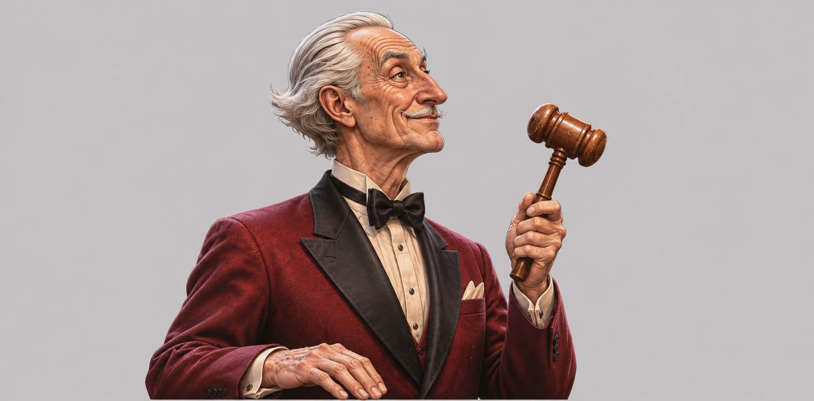

Chapter 4 · Detail revision v02
Generated / unselected · November 21, 2026
Lobby and portrait pair revised following Nate’s request for more detail. Small scene characters stay simple; the separate close portrait carries facial and costume detail. Chapter 2 still exceeds these candidates in natural material rendering.
Revised lobby and portrait pair establish the detail standard first. Restroom and hall remain in preserved v01 and have not been revised or selected.
Manifest / hashes · Comparison · Native authoring QA · Browser QA · Verbatim canonical requirements
CH4-01 · Grand Bellevue Lobby · v02
Closer room proportions; taller facilities doors; shaped metal shading and collars; lit panel bevels; deeper room connections; patterned worn carpet; richer wood, porcelain lamps and flower clusters. Tiny characters remain simple.
Review gap: Still more stylized and planar than Chapter 2. Perspective and foliage/flower rendering do not yet match its richness. Door-intact establishing state; later incidents are not literally shown.
v02 candidate
Approved Chapter 2
v01 comparison · unchanged prior candidate
Detailed reference · unchanged

Native PNG · Editable pixel source · Reconstruction brief
SHA-256 da83c73dbb271e1e4843b1e9e1cce9be0f780bee9c181ddb65d5e849f9de0fde
CH4-02 · Auctioneer close background · v02
More fabric folds and fringe, modeled silver duct bands, panel bevels, chipped plaster ledges, faceted lamp glass, worn wood and door hardware. Separate native close camera retained.
Review gap: Large wall planes remain simple; not yet equal to approved receptionist material modeling. Provisional until lobby accepted.
v02 native layer · 564×278
v01 comparison · unchanged prior candidate
Detailed reference · unchanged

Native PNG · Editable pixel source · Reconstruction brief
SHA-256 03875ce7531034e1a1ff5991d6bf4e9b87e8e6e676432d50047c608ea8a11b28
CH4-03 · Auctioneer — Showman · v02
Smaller facial color planes, eye and eyebrow acting, crow’s feet and smile folds, layered silver locks, neck tendons, knuckles/nails and gavel bevels. More shirt, satin and jacket tailoring detail.
Review gap: Angular face and cloth remain stylized. Head/hand anatomy and likeness to the detailed reference still need Nate’s review. Additional line detail does not by itself establish improved acting.
v02 native layer · 564×278
v01 comparison · unchanged prior candidate
Detailed reference · unchanged

Native PNG · Editable pixel source · Reconstruction brief
SHA-256 029cfb146a607452cd88a368b945e5d07d35ccd3da40985ac3a397225c313bf5
Portrait composition · native 564×278
Approved receptionist · facial and material benchmark
Approved benchmarks · unchanged
conveniences bureau
control tower
spore garden
tour tram
Reception scene character scale

| Comparison axis | Assessment |
|---|
| Logical pixel size | 314x206 main; 564x278 separate portrait layers. Matches approved contracts. |
| Detail density | Increased door/furniture size, molding layers, light planes, flower clusters and material-specific detail. Chapter 2 remains richer and more natural. |
| Silhouette clarity | Restroom pair, podium, ballroom/piano and service connection remain legible. Crowded small guests and arrangements need review. |
| Color clusters | New clustered light and shadow follow material planes. Portrait uses smaller facial planes and cloth highlights; no palette-count target, filtering or posterization. |
| Architectural edges | New bevel light/shadow and cylinder shading. Still a strongly planar rendering with perspective limitations. |
| Object readability | Larger doors, podium paneling, corridor lights/cart, lamps and urns. Their route roles take priority over texture. |
| NPC scale and simplicity | Small scene figures have no facial features. Separate transparent portrait adds facial/hair/hand detail at 564x278. |
| Native and 4x appearance | Both supplied at exact sizes; v01 side-by-side and four actual Chapter 2 benchmarks included. Scaling is NEAREST only. |
Approved receptionist is more naturally rendered. v02 adds anatomy and costume detail but does not yet demonstrate equivalent facial realism.